6. Register experiments¶
6.1. What are experiments?¶
Here, you can imagine “Experiments” as a kind of flowrcharts
An experiment consist of following components
General information
Title, experimenter, date, …
Steps
Each experimental protocol is recorded here
You can refer chemicals, mixtures, other experiments, etc.
6.2. Example: Simple experiment¶
6.2.1. Preparation¶
Let’s record a very simple experiment:
Prepare acetone
Heat it at 50 oC for 5 min
Obtaining relative permittivity of 21
Move to “Add experiment” page
Set basic parameters as you like
You should set “Project”
This value is necessary for exporting processes 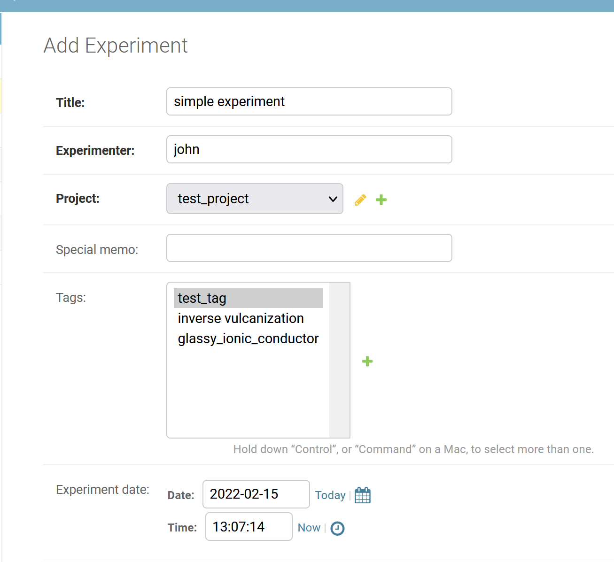
Move to the “STEPS” section
As the first step, set acetone information
Name: your favorite step name
CHEMIAL: select acetone
Other forms: Leave as blank 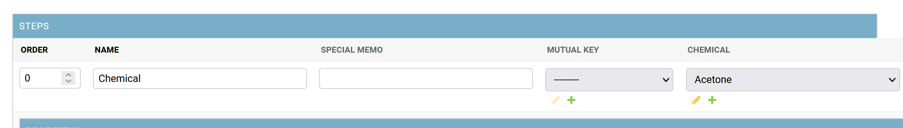
Add the second step
Following is an example 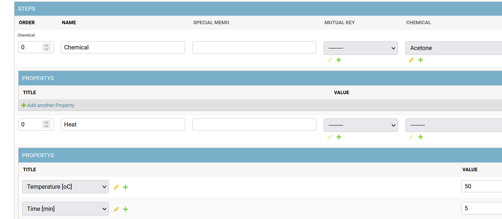
Add the last step
Following is an example 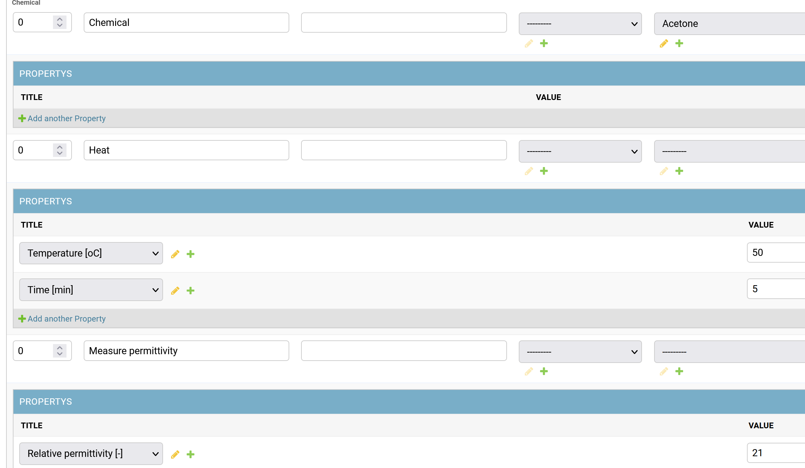
6.2.2. View flowchart¶
Save the experiment
Click “View graph” button 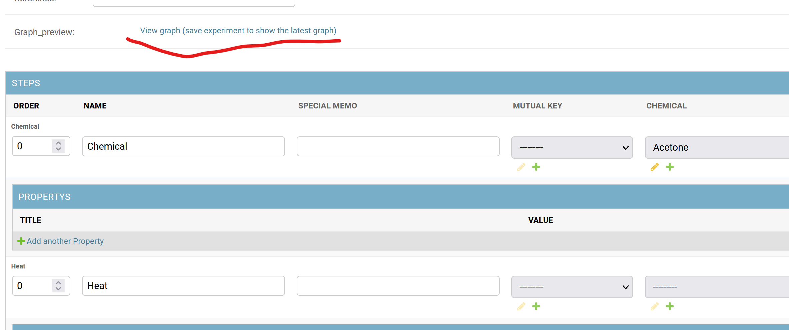
You will see the following kind of graph, if successfully made. 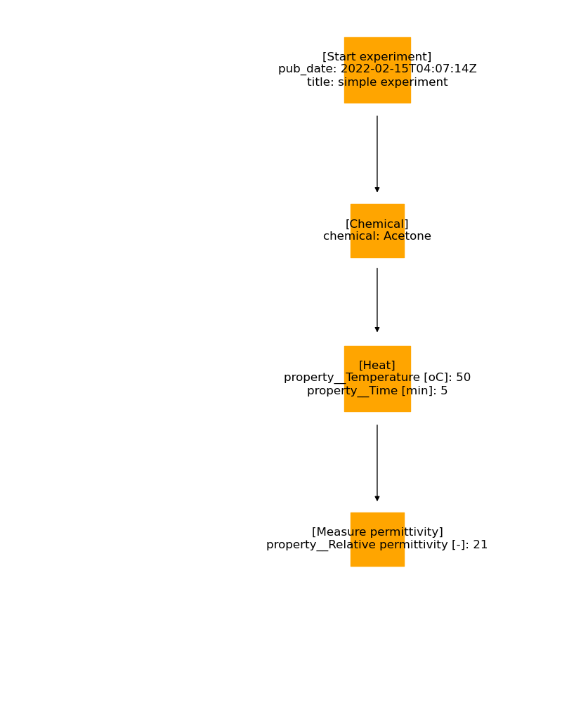
6.3. Example: Add another experiment with similar condition¶
6.3.1. Overview¶
Let’s consider the case of changing temperature
Exp1 (same as above)
Prepare acetone
Heat it at 50 oC for 5 min
Obtaining relative permittivity of 21
Exp2 (new one: note that the values are imaginary)
Prepare acetone
Heat it at 60 oC for 15 min
Obtaining relative permittivity of 30
6.3.2. Set mutual key¶
Set Mutual key for the two steps 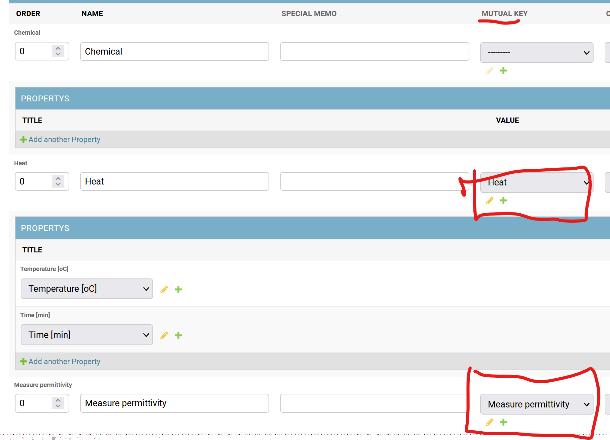
6.3.2.1. NOTE: What is Mutual key?¶
“Mutual key” works as a landmark during conversion of graphs into a table
Following is an example image, showing the function of “Mutual key” 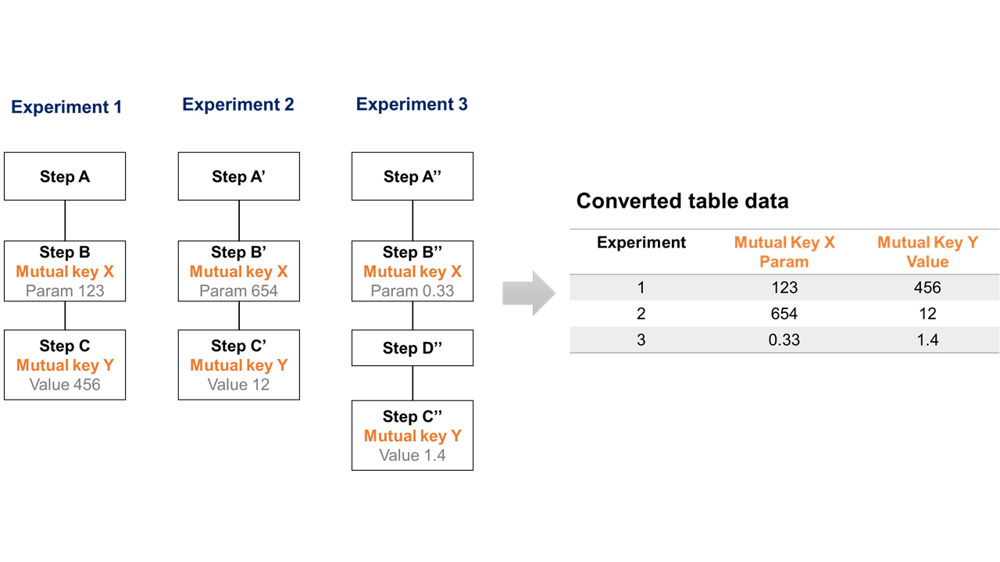
6.3.3. Duplicate experiment¶
Go back to the experiment view
Click “Duplicate experiment” button 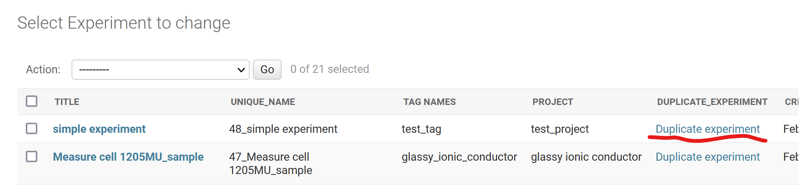
If you reload the page, a new experiment will appear. 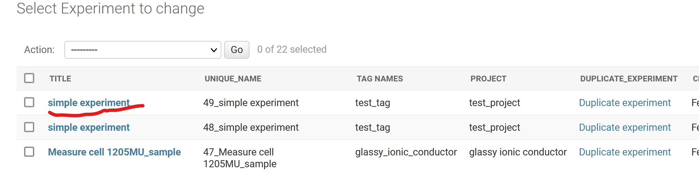
6.3.4. Edit another experiment¶
Open the newly generated experiment
You can change experiment title as you like
Set new values 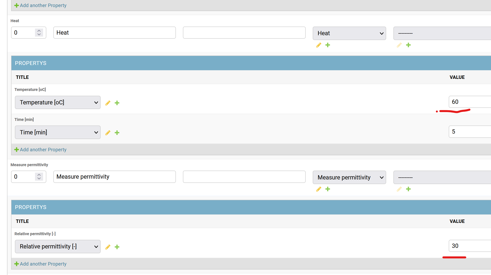
6.3.5. Convert to table data¶
For machine learning, graph-shaped data are often difficult to treat
The system can automatically convert graphs into a table data
Go back to the experiment view
Select experiments to be converted
Select action
Export table
Exporting normal table
Export fingerprinted table
Table with fingerprints
Algorithm
https://chemrxiv.org/engage/chemrxiv/article-details/61ee04a671868d22fdbc8856
JSON
For programmers!
Click “Go” button
Conversion takes some time
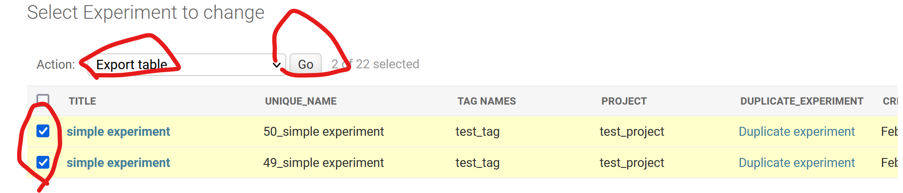
6.3.6. View converted data¶
The converted table can be edited by “D-TALE” module
https://github.com/man-group/dtale
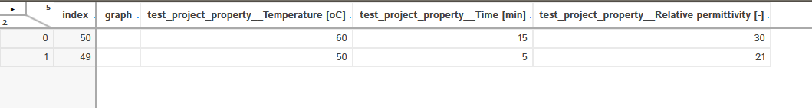
6.3.7. Inputting many variables in a single experiment¶
Split multiple variables with comma (,) to express multiple experiments
The following expression equals to four experiments with different variables.
Temperature = 10, permittivity = 1
Temperature = 20, permittivity = 20
Temperature = 30, permittivity = 20
Temperature = 40, permittivity = 50
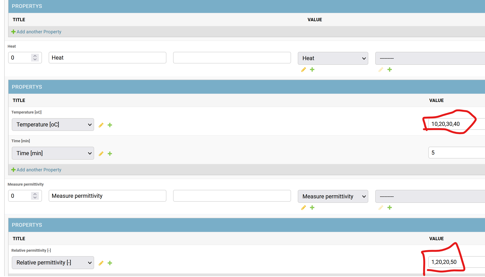